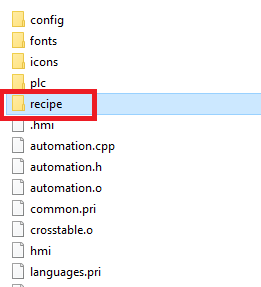
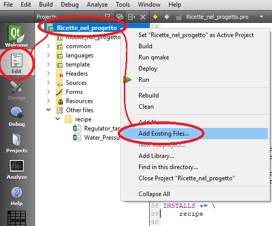
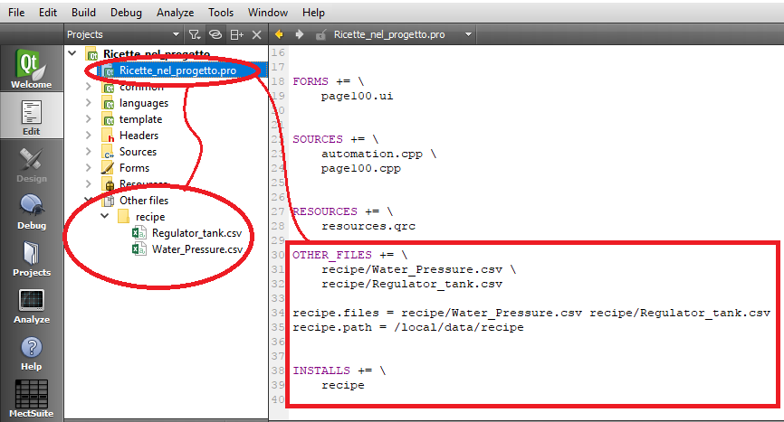
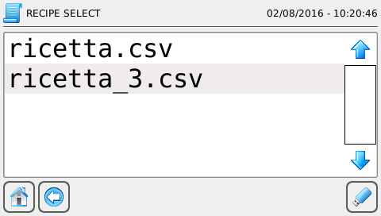
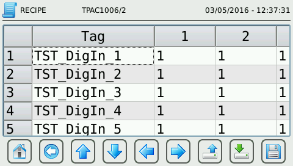

Recipes can only descend from existing ones on target. New families of recipes can be built on PC and then loaded on target trough web interface described in the relevant paragraph or can be sent from the project directly.
Recipes are text files in .csv format where in each row there is a variable and the value to link to.
For example, to create a recipe that sets in the first step output TPLC_OUT_1 to 0 and sets to 1 output TPLC_OUT_2 and in step two the output TPLC_OUT_1 to 1 and to 0 the output TPLC_OUT_2 write:
TPLC_OUT_1; 0; 1
TPLC_OUT_2; 1; 0
It is possible to add all steps (column) you want.
WARNING: use “;” as separator.
Zip the file/folder to upload a recipe or a family of recipes on the device and transfer via web interface (see “Web interface functioning” chapter) or directly with the project.
In this case you need to follow this steps:
Open Windows Explorer and create the new folder “recipe” in the project.

Put in the recipes file .csv
With the right botton of the mouse, press “Add Exising Files..” and select the recipes to upload.

Open the file “.pro”

Add the following code and change the names of the recipes with your recipes name:
recipe.files = recipe/Water_Pressure.csv recipe/Regulator_tank.csv
recipe.path = /local/data/recipe
INSTALLS += \
recipe
The recipes display/load/modify is in 2 steps:
Select recipe to show
Display/load/modify of the selected recipe
To use recipe page to use an ATCMbutton in the change page mode and as “pageName” use “recipe_select”.
In this window it is possible to browse the existing recipe families and the belonging recipes.

Once selected the desired recipe, press the key to save the recipe or the family of recipes on USB
( )
or press the recipe to show the page of the recipe.
)
or press the recipe to show the page of the recipe.
Recipes files are .csv format files with 2 columns:
Variable name
Variable value

Once a recipe is shown, it is possible:
Modify the variable value: select the variable.
Read actual values of variables of the recipe (on instruments connected) by pressing Read key ().
Write on devices the displayed values in the recipe by pressing Load key ().
Save actual recipe: press Save key ( ) and digit desired name.